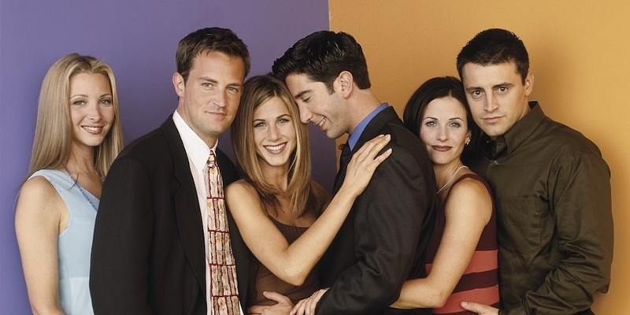

O seriji
Punih 10 godina popularna šestočlana ekipa osvajala je srca publike diljem Amerike i cijelog svijeta. Prva epizoda emitirana je 22. rujna 1994. godine. U to vrijeme svih šest glumaca nije imalo posebnih uspjeha u karijeri, stoga im je ova serija iz korijena promijenila živote. Od nekoliko prijedloga za ime serije (Across the Hall, Insomnia Café, Six of One, Friends Like us) naposljetku je najbolje odgovarao naziv Friends. Za vrijeme druge sezone gledanost je naglo porasla, a najveću pozornost privlačili su Ross i Rachel sa svojom romantičnom vezom. Tijekom godina serija je postigla iznimnu popularnost diljem svijeta, tako da je zadnja epizoda, emitirana 2004. godine, u Americi postigla gledanost od 51,1 milijun gledatelja. Nakon završetka emitiranja Prijatelja, takozvana "spin-off" serija Joey emitirala se još dvije sezone.
Glumačka postava
Producenti David Crane i Marta Kauffman prilikom pisanja scenarija u vidu su imali samo Davida Schwimmera za ulogu Rossa. Courteney Cox Arquette
je pozvana na audiciju za ulogu Rachel zbog njezine iznimne ljepote, no ona je od samog početka htjela ulogu Monice i naposljetku ju je uspjela i
dobiti. Jennifer Aniston trebala je ići na audiciju za ulogu Monice, međutim, pronašla se u ulozi Rachel. Glumica Jane LynchLisa Kudrow, bolje poznata kao
kaotična Phoebe, za vrijeme prve sezone glumila je i u seriji Lud za tobom svoju sestru blizanku Ursulu Buffay te je tako stvorena poveznica između
te dvije serije. Ulogu Chandlera dobio je Matthew Perry, a Joeya Matt LeBlanc, jer je jedini uspio Joeya prikazati onako kako su to producenti i
željeli - dovoljno zavodnički da dobije i spava sa svakom ženom koju poželi, a dovoljno simpatičan da mu publika to ne zamjera.
Radnja i likovi
Serija govori o životima šestero 25-godišnjaka koji žive u New Yorku. Daleko od roditeljskog doma ovisni su sami o sebi, a ljubav i pažnju pronalaze jedni u drugima. Monica Geller (Courteney Cox Arquette), mlađa je sestra Rossa Gellera (David Schwimmer) i svoj stan dijeli sa svojom najboljom prijateljicom iz djetinjstva, Rachel Green (Jennifer Aniston), koja kroz 10 godina ima uspone i padove u ljubavnoj vezi sa Rossom. Preko puta hodnika žive glumac u usponu Joey Tribbiani (Matt LeBlanc), za kojim ženska populacija luduje i Chandler Bing (Matthew Perry), koji se većini ljudi u početku čini homoseksualcem, što ga često uznemiruje.
Monicin brat Ross u prvoj se epizodi seli u novi stan u njihovoj blizini, nakon što se rastao od supruge Carol Willick, koja je nakon 7 godina braka otkrila da joj se više sviđaju žene. Ona se ženi s novom partnericom Susan Bunch i rađa Rossovo prvo dijete, Bena. Šesti član ekipe, luckasta Phoebe (Lisa Kudrow), kao dijete živjela je na cesti jer joj je otac rano napustio obitelj, a majka joj se ubila (u trećoj sezoni otkriva da joj žena koju je smatrala majkom zapravo nije prava majka te pronalazi pravu). Sa sestrom blizankom, kako sama kaže, nije pričala otkad su dijelili majčin trbuh. Ona živi s bakom koja kasnije umire.
| Sezona | Premijera sezone | Finale sezone | Godina sezone | Rang | Gledanost (u mil.) |
Najgledanija epizoda | |
|---|---|---|---|---|---|---|---|
| Naslov | Gledanost (u mil.) |
||||||
| 1 | 22. rujan 1994. | 18. svibanj 1995. | 1994–95 | 8 | 24.3 | "The One Where Rachel Finds Out" | 31.3 |
| 2 | 21. rujan 1995. | 16. svibanj 1996. | 1995–96 | 3 | 29.4 | "The One After the Superbowl" | 52.9 |
| 3 | 19. rujan 1996. | 15. svibanj 1997. | 1996–97 | 4 | 25.0 | "The One Where Chandler Can't Remember Which Sister" | 29.8 |
| 4 | 25. rujan 1997. | 7. svibanj 1998. | 1997–98 | 4 | 24.1 | "The One with Ross's Wedding" | 31.6 |
| 5 | 24. rujan 1998. | 20. svibanj 1999. | 1998–99 | 2 | 23.5 | "The One After Ross Says Rachel" | 31.1 |
| 6 | 23. rujan 1999. | 18. svibanj 2000. | 1999–2000 | 5 | 20.7 | "The One with the Proposal" | 30.7 |
| 7 | 12. kolovoz 2000. | 17. svibanj 2001. | 2000–01 | 5 | 20.2 | "The One with Monica and Chandler's Wedding" | 30.1 |
| 8 | 27. rujan 2001. | 16. svibanj 2002. | 2001–02 | 1 | 24.5 | "The One Where Rachel Has a Baby" | 34.9 |
| 9 | 26. rujan 2002. | 15. svibanj 2003. | 2002–03 | 2 | 21.6 | "The One Where No One Proposes" | 34.0 |
| 10 | 25. rujan 2003. | 6. svibanj 2004. | 2003–04 | 3 | 22.8 | "The Last One (Friends)" | 52.5 |